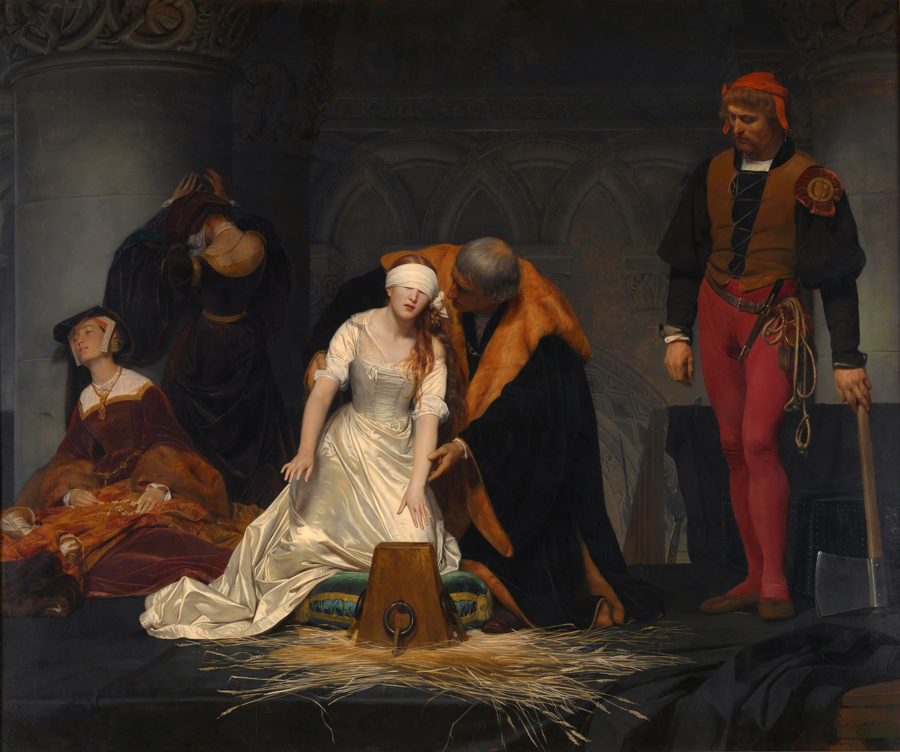
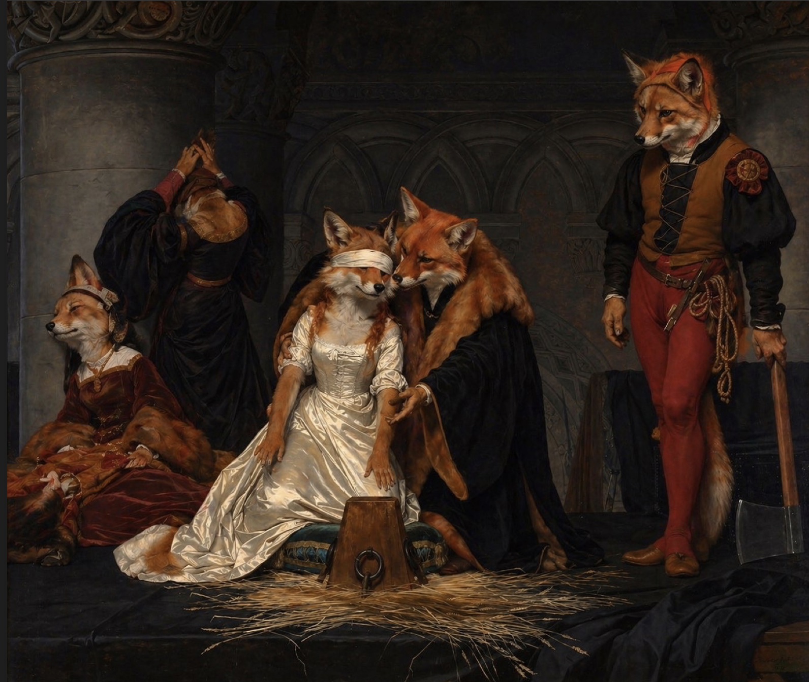

La toile représente les instants précédant l'exécution de Lady Jane Grey, placée ici au centre du tableau, héritière d'Édouard VI, proclamée reine d'Angleterre à l'âge de 16 ans au tout début de février 1554, destituée neuf jours après son couronnement. L'action figurée ici montre donc le moment où, le 12 février, elle est sur le point d'être décapitée à la tour de Londres sur ordre de I Tudor, également prétendante au trône. Jane est surnommée, du fait de la brièveté de son règne, la "reine de neuf jours".

L'exécution de Lady Jane Grey par Paul Delaroche est un tableau peint à l'huile sur toile, realisé en 1833, qui mesure environ 246x297 cm. Dans une salle sombre éclairée par des bougies, une jeune femme en robe blanche est assise, les yeux bandés. à ses cotés, un homme la tient par les épaules, tandis que d'autres personnages observent en silence: une femme épuisée, un homme qui prie, et un bourreau tenant une hache. Tout est immobile, lourd de tension. Puis l'homme penché vers elle lui murmure quelque chose. Elle se redresse: ce n'est pas une simple cérémonie, mais une sentence. Le silence devient encore plus lourd, comme si le temps s'était arreté.